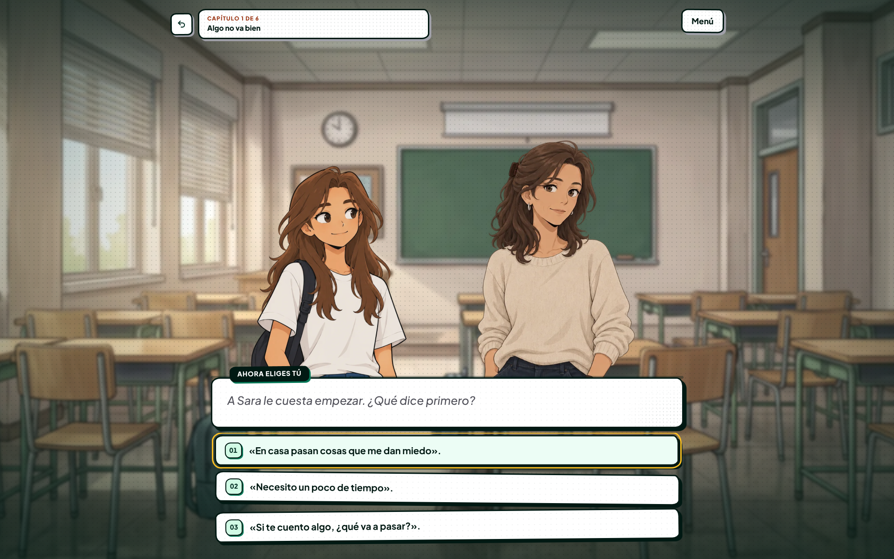
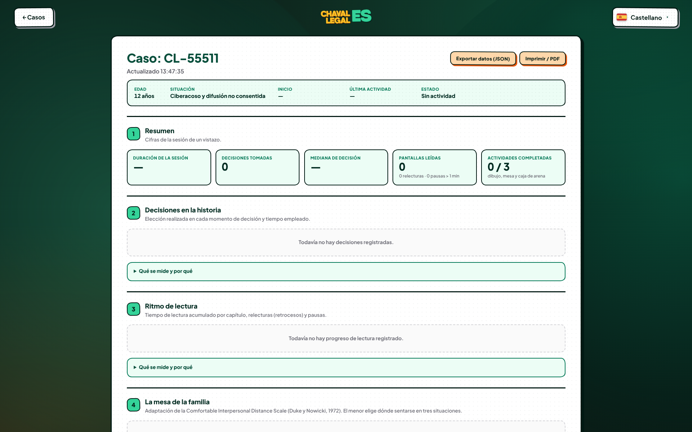

La justicia suele resultar hostil, fría e intimidante para un menor
Riesgo de Revictimización
Someter a un menor a interrogatorios repetitivos o salas judiciales solemnes bloquea su expresión emocional y agrava el trauma.
Brecha de Comprensión Legal
Conceptos como patria potestad, ciberacoso, medidas cautelares o tutela se formulan en un lenguaje ajeno a su edad.
Falta de Herramientas Objetivas
Los trabajadores sociales a menudo carecen de dinámicas estandarizadas digitales para evaluar vivencias sin forzar respuestas verbales directas.
Un entorno lúdico protegido con pleno rigor jurídico
Alineación con la Ley LOPIVI
Cumple las directrices de la Ley Orgánica de Protección Integral a la Infancia y Adolescencia frente a la Violencia, garantizando un entorno amigable.
Proyección a través de la Historia
El menor no habla de sí mismo en un test frío: acompaña a personajes como Sara en sus dilemas cotidianos escolares y digitales.
Telemetría Descriptiva Respetuosa
Registra ritmo de lectura, dudas en opciones y dinámicas relacionales sin invadir su intimidad ni recopilar datos biométricos.

Decisiones con Tiempo y Sin Juicio
Las elecciones aparecen en cápsulas estilizadas con trazo de tinta. El menor puede releer el diálogo anterior, tomarse su tiempo o pedir una pausa sin penalización ni prisas.
Personajes con Expresiones Empáticas
Sprites ilustrados con expresiones faciales diferenciadas (alegría, duda, pudor, alivio). Ayudan a los jóvenes a identificar emociones complejas y normalizar pedir ayuda a adultos de referencia.
Puntos de Giro y Ramificación Temática
Aborda ciberacoso escolar, difusión no consentida de fotos, conflictos de custodia o soledad digital desde situaciones verosímiles en el aula, el patio o la habitación.
La Mesa de la Familia
Adaptación Escala CID (Duke & Nowicki, 1972)El menor elige espontáneamente dónde sentarse en tres situaciones cotidianas (comida familiar, momento difícil, celebración), arrastrando su ficha sobre la mesa.
La Caja de Arena
Expresión Simbólica del EntornoInspirado en la técnica del Sandplay. El menor compone un espacio seguro situando objetos, refugios y personajes bajo diferentes condiciones climáticas (sol, tormenta, niebla).
Avatar y Dibujo Libre
Expresión Emocional GuiadaMódulo de personalización donde el participante crea su alter ego y realiza trazos expresivos. Los dibujos se guardan como snapshots descriptivos en el informe.

⏱️ Ritmo de Lectura y Pausas
Mide el tiempo de lectura por capítulo, retrocesos a pantallas previas y pausas superiores a 60 segundos. Permite saber qué momentos generaron mayor reflexión o duda sin presionar al menor.
🔀 Mediana de Decisión y Rutas
Registra qué decisiones tomó el menor en los nudos críticos de la historia y el tiempo empleado en elegir, revelando patrones de afrontamiento (evitación, asertividad o búsqueda de apoyo).
📄 Exportación Directa a PDF / JSON
Genera en un clic un informe técnico estructurado listo para adjuntar al expediente de servicios sociales, fiscalía de menores o juzgados de familia.
🔄 Sondeo Ligero en Vivo (Polling 5s)
El profesional puede observar el avance de la sesión en directo mientras el menor juega en una tablet o sala contigua, respetando su espacio personal.
Stack Moderno, Ligero y Concurrente
Un solo origen lógico. Embebe el motor LegalinStory y aísla la lógica de presentación con CSS modular.
Cinco endpoints REST ultrarrápidos con validación Pydantic estricta y reloj de servidor unificado.
Cada caso es un JSON independiente con threading.Lock. Cero riesgo de bloqueos de base de datos pesada.
Generador de Historias con Validación de Grafo
El LLM opera bajo directrices de protección ética, sin detalles morbosos ni autolesiones.
Nodos tipados: DialogueNode, ChoiceNode, BranchNode, EndingNode.
Certifica alcanzabilidad total del grafo. Si el LLM falla, recurre a plantillas mock homologadas.
"Acercar el Estado de Derecho a los más jóvenes no es simplificar la ley, es hacerla justa y accesible."
Chavales Legales demuestra cómo la tecnología, el diseño con identidad propia y la narrativa interactiva pueden transformar la protección de la infancia en España.
🛡️ Cero Revictimización
Sustituimos el estrés del interrogatorio por la empatía de una historia donde el menor se siente seguro y comprendido.
🤝 Apoyo al Profesional
Aportamos telemetría objetiva, métricas de lectura y mapas de apego familiar que enriquecen los informes sociales.
🌱 Pedagogía Cívica
Empoderamos a niños y adolescentes para que reconozcan situaciones de riesgo y sepan que la ley está para protegerles.